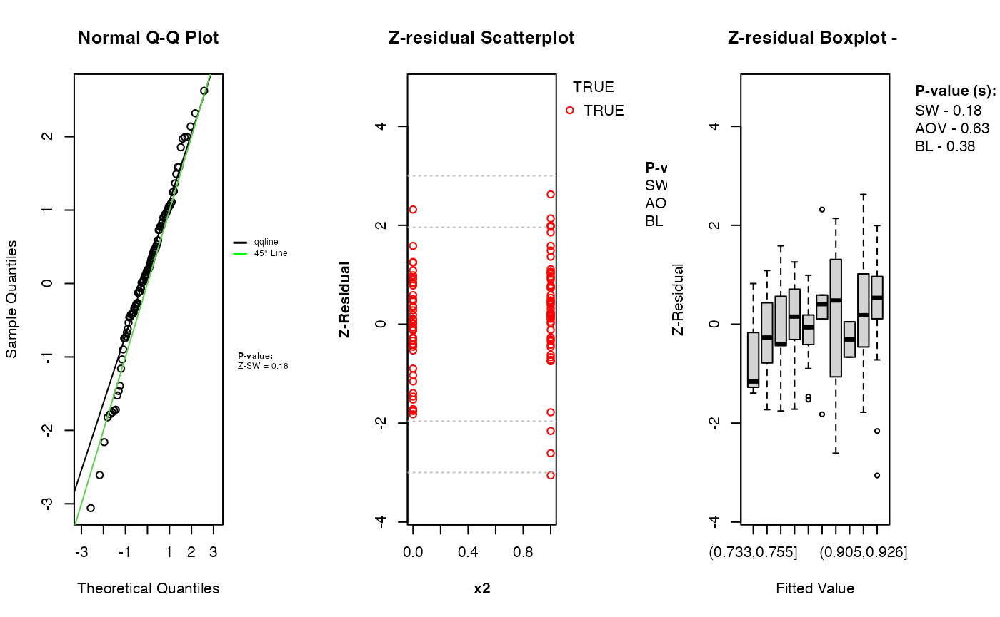
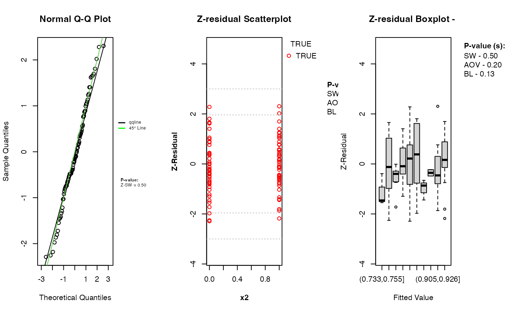

Z-residual Diagnosis for Logistic Regression
2025-11-26
Source:vignettes/vignette_logistic.Rmd
vignette_logistic.RmdIntroduction
This vignette demonstrates how to use the Zresidual
package to compute Z-residuals for diagnosing Logistic regression, based
on the output from the brms package in R [@Burkner2017-brms] to reveal potential model
misspecifications. The examples illustrate the practical use of these
residuals for RPP
[@Feng2020] diagnostics.
Definitions of Z-residuals for Logistic Regression
This section demonstrates the definitions of posterior predictive quantities including the posterior predictive PMF, survival function, and RPP for Logistic Regression.
Let , where indicates a success, and indicates a failure for the $i^\th$ observations.
Using Bayesian estimation (e.g., via the brms package),
we draw
samples from the posterior distribution. Let
denote the $t^\th$ posterior draw.
For a given observation , the posterior predictive PMF and survival functions are defined below.
For any observed value , we define: where . Here, is the observed value, which can refer to either success or failure. Then, the Z-residual of the response variable is, where is the quantile function of standard normal distribution.
A Simulation Example
Model fitting with brms
To demonstrate how Zresidual works with hurdle models,
we first simulate data from a
HNB model. This simulated
dataset allows us to evaluate how well the model and residual
diagnostics perform when the true data-generating process is known.
# Simulation parameters
n <- 100
beta0 <- -1
beta1 <- 6
beta2 <- 1
# Predictors
x1 <- runif(n, 0, 1)
x2 <- rbinom(n, size = 1, p = 0.5)
# Generating response variable
logit_p <- beta0 + beta1*x1 + beta2*x2
p <- exp(logit_p) / (1 + exp(logit_p))
y <- rbinom(n, 1, p)
# Random error variables
j <- 5 # number of random effect
sample_experiment <- replicate(j, rnorm(n, mean = 0, sd = 1), simplify = FALSE)
z <- data.frame(matrix(unlist(sample_experiment), ncol=j, byrow=FALSE))
z_names <- paste0("z", seq(1,j))
colnames(z) <- z_names
data_logit <- data.frame(x1, x2, z, y)
k <- j+2
predictors <- colnames(data_logit)[2:k]
logit_formula <- formula(paste("y ~ ", paste(predictors, collapse=" + ")))This dataset includes a continuous predictor x1, binary
variable x2, and five random error variables
z1, z2, z3, z4, z5 and the outcome y is
generated from a Bernoulli process. Note that the error variables are
not included in generating the y outcome variable.
Now, we use the brms package to fit a logistic
regression model to the simulated data.
library(matrixStats)
library(Zresidual)
library(brms)
#fit_logit <- brm(bf(logit_formula),
# data = data_logit,
# family = bernoulli())
load("~/Desktop/Zresidual/vignettes/fit_logit.Rdata")The family = bernoulli() tells brms to use
a logistic regression for binary response. We use default parameter
setting on this example to fit the model.
Computing Z-residuals
In this example, we compute Z-residuals for the logistic regression
using Zresidual.bernoulli(). The package take
brms fit as an input for the
Zresidual.bernoulli() function. If the model is Hurdle
model, the type argument
("zero", "count" or "hurdle") specifies which component to
use when calculating the residuals. By default, Z-residuals are computed
using the Importance Sampling Cross-Validation (iscv)
method based on randomized predictive p-values
(RPP). Alternatively,
users can choose the standard Posterior
RPP method by setting
method = "post".
zres_logit_iscv <- Zresidual.bernoulli(fit_logit)
zres_logit_post <- Zresidual.bernoulli(fit_logit, method = "rpost")What the function returns
The function Zresidual.bernoulli() (and other Z-residual
computing functions) returns a matrix of Z-residuals, with additional
attributes. The returned object is of class zresid, which
includes metadata useful for diagnostic and plotting purposes.
Return Value
A numeric matrix of dimension n × nrep, where
n is the number of observations in the data and
nrep is the number of randomized replicates of Z-residuals
(default is 1). Each column represents a set of Z-residuals computed
from a RPP, using
either posterior (post) or importance sampling
cross-validation (iscv) log predictive distributions.
Matrix Attributes
The returned matrix includes the following attached attributes:-
type: The component of the hurdle model the residuals correspond to. One of “zero”, “count”, or “hurdle”. For logistic, type is returned as “zero”. -
zero_id: Indices of observations where the response value was 0. Useful for separating diagnostics by zero and non-zero parts. -
log_pmf: A matrix of log predictive probabilities (log-PMF) per observation and posterior draw. -
log_cdf: A matrix of log predictive CDF values used in computing the RPPs. -
covariates: A data frame containing the covariates used in the model (excluding the response variable). This can be used for plotting or conditional diagnostics. -
fitted.value: The posterior mean predicted value for each observation depending on the type.
Diagnostic Tools for Z-Residuals
Visualizing Z-residuals
TheZresidual package includes built-in plotting functions
(QQ Plot, Scatter Plot, Boxplot) to help diagnose model fit using
Z-residuals. These functions are designed to work directly with objects
of class zresid returned by functions like
Zresidual.bernoulli(). These plots help assess:
- Whether residuals are approximately standard normal (via QQ plots),
- Whether there are patterns in residuals across fitted values (which may suggest model misspecification),
- Whether residuals differ across covariates (optional extensions).
par(mfrow = c(1,3))
qqnorm.zresid(zres_logit_iscv)
plot.zresid(zres_logit_iscv, X="x2", outlier.return = TRUE,categor=TRUE)
boxplot.zresid(zres_logit_iscv, X="lp")
par(mfrow = c(1,3))
qqnorm.zresid(zres_logit_post)
plot.zresid(zres_logit_post, X="x2", outlier.return = TRUE,categor=TRUE)
boxplot.zresid(zres_logit_post, X="lp")
The diagnostic evaluations for the model—comprising scatter plots, Q-Q plots, and boxplots of Z-residuals—demonstrate that the model adequately captures the data structure. The Z-residuals are evenly scattered around zero and mostly fall within the range of -3 to 3, indicating no visible model misfit. The “count” represent success while “zero” represent failure. Complementary statistical tests, including the SW test for normality, ANOVA for mean equality, and BL test for variance homogeneity, all return p-values above the 0.05 threshold. This suggests that the residuals follow a normal distribution and exhibit equal means and variances across fitted value intervals. The Q-Q plots further support normality through close alignment with the 45-degree reference line, while the boxplots confirm consistent residual means across partitions. Collectively, these diagnostics validate that the model satisfies key distributional assumptions and that the proposed Z-residual methods are effective in detecting model adequacy.
The plotting functions in the Zresidual package are designed to be
flexible and lightweight, allowing users to quickly visualize residual
patterns. These functions support all customizable arguments in base
R functions such as axes, labels etc. by making them
adaptable to a wide range of diagnostic workflows. The
plot.zresid() function offers flexible diagnostic plotting
for Z-residuals, supporting various x-axes such as index, fitted values,
and covariates. Both plot.zresid() and
qqnorm.zresid() automatically highlights outlier residuals
that fall outside the typical (or user specified) range making it easier
to identify problematic observations.
Statistical Tests
In addition to visual diagnostics, the package offers formal
statistical tests to quantify deviations from normality or homogeneity
of variance in Z-residuals by taking an zresid class object
as an input.
Shapiro-Wilk Test for Normality (SW)
sw.test.zresid(zres_logit_iscv)## [1] 0.18219
sw.test.zresid(zres_logit_post)## [1] 0.497763Analysis of Variance (ANOVA)
aov.test.zresid(zres_logit_iscv, X="lp")## [1] 0.6287762
aov.test.zresid(zres_logit_post, X="lp")## [1] 0.20119Bartlett Test (BL)
#bartlett.test.zresid(zres_logit_iscv, X="lp")
#bartlett.test.zresid(zres_logit_post, X="lp")These tests return standard htest or aov
objects, making them easy to report, summarize, or integrate into
automated workflows. One advantage of the visualization functions
provided by the Zresidual package is that they allow users
to diagnose the model both visually and using statistical tests
simultaneously.
Other Functions
In addition to Z-residual computation and visualization, the
Zresidual package provides several utility functions to
support deeper model diagnostics and probabilistic analysis including
functions for calculating the logarithmic predictive p-values
(post_logrpp(), iscv_logrpp()). The package
also includes dedicated functions to compute the logarithmic PDFs and
CDFs for supported distributions. These can be used to manually inspect
likelihood components or to derive custom model evaluation metrics. The
log-scale calculations offer improved numerical stability, especially
when dealing with small probabilities. These tools integrate seamlessly
with outputs from Bayesian models fitted using brms,
maintaining compatibility and flexibility. Together, they extend the
package’s functionality beyond residual analysis, supporting a
comprehensive and rigorous approach to Bayesian model checking.